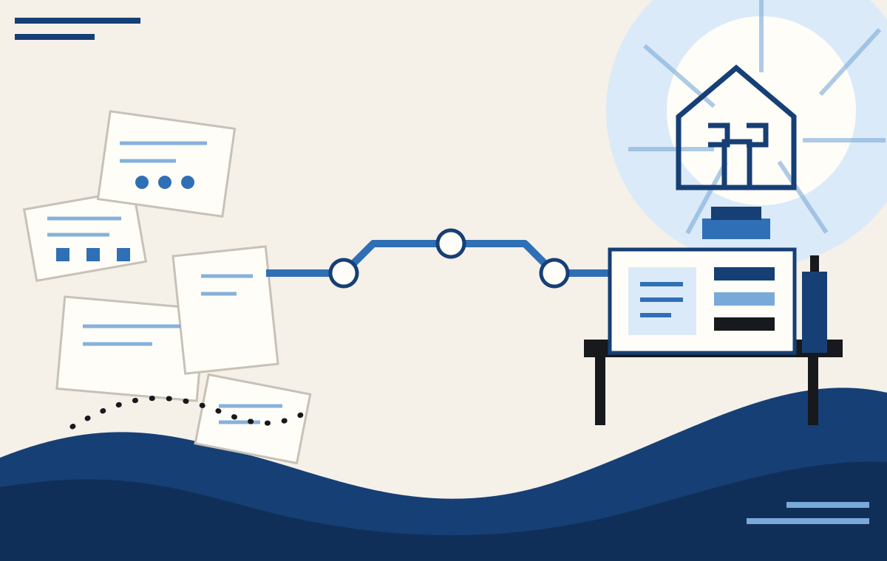

Show us the mess
Describe one awkward process and, where useful, share redacted examples of how it currently works.
Small-business operations, made saner.
Give us one back-office process that drives you mad. We’ll show you where it breaks and give you a simpler, controlled way to run it.
Process first. Technology has to earn its place.

The House rule
Less chasing. Less retyping. Less Sunday-night admin.
How the House works
A good process should feel almost boring: clear, controlled and easy to repeat. If everybody needs a heroic memory, six spreadsheets and a weekly chase email, something is wrong.
Describe one awkward process and, where useful, share redacted examples of how it currently works.
We follow the work as it really happens and find the delays, duplication, unclear ownership and unnecessary effort.
We design the better state and ask whether any technology is genuinely needed.
A clear blueprint, a visual explanation that fits the problem, and a sensible Now / Next / Later sequence.
First House service
£149 fixed pilot price
For UK organisations that know a process is wasting time but do not need another consultant selling them a six-month programme.
WHAT COMES BACK
B2B pilot. No legal, tax, regulated financial, medical, immigration or other regulated professional advice.
The House philosophy
Most back-office problems are not mysterious. They have simply accumulated: one extra spreadsheet, one workaround, one hand-off nobody quite owns.
We look at the work as it really happens, keep what earns its place and remove what does not. The result should feel calmer, easier to explain and easier to run on an ordinary Tuesday.
Tradition + modernity. Confidence + clarity. Craft + repeatability. Glamour + usefulness.

Bring us one irritating process
Tell us what happens, who is involved, what keeps going wrong and what you wish was easier. For a first enquiry, keep sensitive or confidential information out.